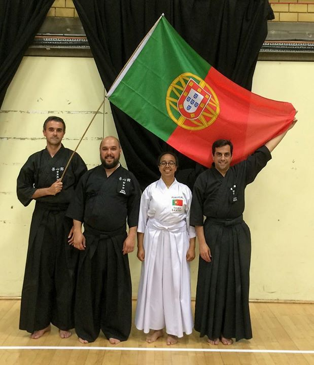
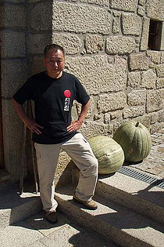
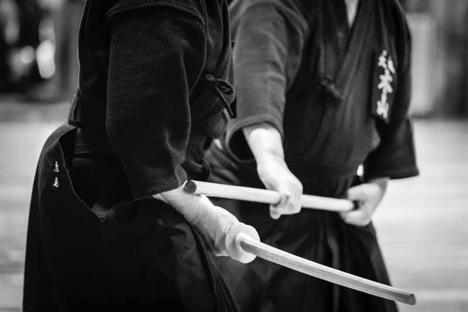

Noticias

2015.09.01
REGRESSO AOS TREINOS
Informamos os nossos associados e todos os potenciais interessados que os treinos do Zenshinkan-ICL recomeçam dia 2 de Setembro, no local e horário habituais.
Local: Complexo Desportivo da Lapa, Rua Almeida Brandão, n.º 39, Lisboa.
Horário:
- Jodo: segundas-feiras, das 20h30 às 22h
- Iaido: quartas-feiras, das 20h30 às 22h
2015.08.14
NOVO GRADUADO NO ZENSHINKAN

No passado dia 8 de Agosto, aquando do Seminário de Iaido e Jodo de Verão de 2015, que teve lugar em Stevenage, no Reino Unido, houve exames de graduação em Iaido, no qual alguns membros do Zenshinkan participaram.
É assim com grande orgulho e satisfação que partilhamos que o nosso colega João Pires foi bem sucedido no seu exame de Yondan (4 Dan) em Iaido.
À medida que as graduações aumentam, os exames de passagem tornam-se cada vez mais difíceis e exigentes. Recebemos assim esta notícia com grande alegria, e esperamos que sirva de inspiração aos praticantes mais novos e dê esperança aos mais avançados.
Os nossos parabéns ao João, e votos de continuados sucessos no futuro para todos os nossos associados!
2015.05.01
MUDANÇA DE LOCAL DE PRÁTICA
Informamos os nossos associados, e eventuais interessados, de que o nosso local de prática e horário dos treinos de Iaido e Jodo foi alterado. Treinamos agora no Complexo Desportivo da Lapa, na Rua Almeida Brandão, n.º 39, em Lisboa.
O novo horário dos treinos é o seguinte:
Jodo: Segundas feiras das 20h30 às 22h;
Iaido: Quartas feiras das 20h30 às 22h.
2015.02.25
IAIDO KYOSHI - SENSEIS ISAO SAIDA, CHRIS MANSFIELD, E LEN BEAN

É com grande alegria e satisfação que partilhamos a notícia de que o nossos conhecidos senseis Isao Saida (7º Dan Iaido), Chris Mansfield (7º Dan Iaido) e Len Bean (7º Dan Iaido),
obtiveram recentemente o título de Iaido Kyoshi. O sensei Saida, durante muito tempo, esteve presente nos nossos treinos regulares e seminários, e sempre acompanhou a evolução do Zenshinkan-ICL na prática de Iaido, antes de regressar permanentemente ao Japão em 2008.
O sensei Chris Mansfield tem sido em grande parte responsável pela evolução do Iaido e Jodo em Portugal, desde o ano de 2007 até ao presente, assim como o sensei Len Bean, que começou a acompanhar-nos alguns anos depois.
Os senseis Chris Mansfield e Len Bean obtiveram este título após terem sido bem sucedidos nos primeiros exames de Iaido Kyoshi a serem realizados na Europa.
Em nome de todo o clube, os nossos parabéns! Domo arigatou gozaimashita!
2015.01.12
ESTÁGIO DE INVERNO DE JODO DE 2015

Nos próximos dias 7 e 8 de Fevereiro, em Lisboa, realizar-se-á o Estágio de Inverno de Jodo de 2015, sob a orientação do sensei Chris Mansfield (7 Dan Renshi), que tem, desde há vários anos, acompanhado e apoiado a prática do Jodo em Portugal.
O seminário está acessível a qualquer praticante de Jodo, independentemente da sua graduação, experiência, ou tempo de prática.
Para efectuar a inscrição no estágio, os interessados em participar deverão aceder a este endereço onde devem preencher e submeter o formulário de inscrição que se encontra na parte inferior da página.
No mesmo endereço pode também encontrar-se toda a informação necessária acerca do estágio: horário, programa, preços, modos de pagamento, e localização.